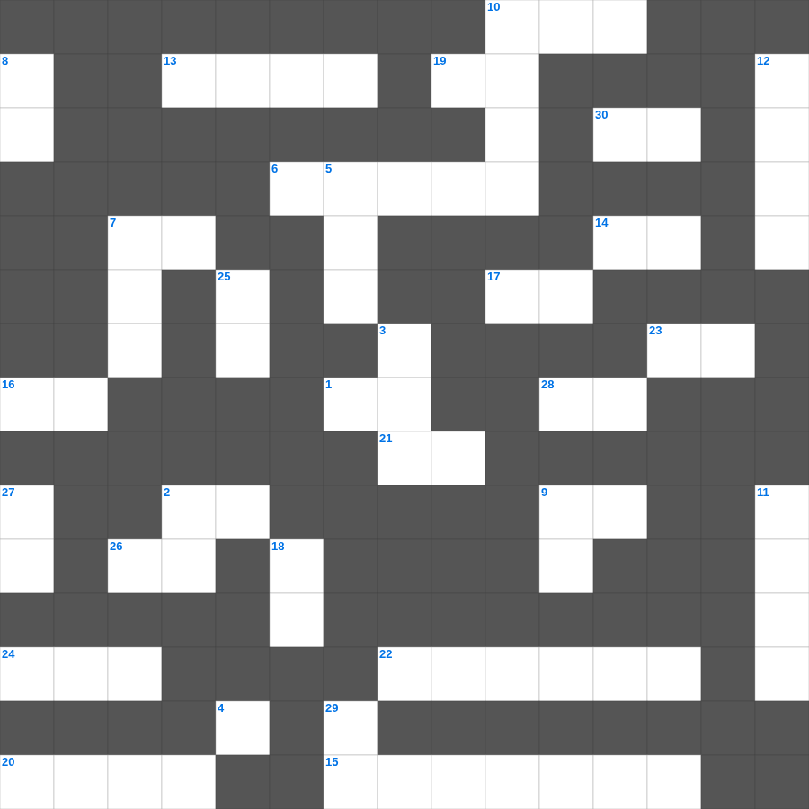

신명기: 마음을 다하여
📌 서비스 정의
십자가로세로는 교회 주보와 주일학교에서 사용할 수 있는 성경 기반 가로세로 퍼즐 서비스입니다. 성경 인물, 사건, 핵심 구절을 바탕으로 제작되었습니다. 온라인 풀이 및 인쇄 기능을 제공합니다.
오늘은 신명기의 주요 내용을 담은 신명기 성경공부 자료를 준비했습니다. 총 35개의 힌트가 있으며, 주일학교 교재나 성경공부 자료로 활용하기 좋습니다. 무료로 즐기는 신명기 가로세로 퍼즐을 지금 바로 풀어보세요!

📝 가로 힌트
1. 두드리라 그리하면 너희에게 이것을 것이니
2. 주 예수를 믿으라 그리하면 너와 네 집이 이것을 받으리라
4. 오직 정의를 이것 같이 흐르게 할지어다
6. 예수님이 저주하여 마른 나무
6. 열매 없는 이것나무를 예수님이 저주하심
7. 사람이 마음으로 믿어 의에 이르고 입으로 이것하여 구원에 이르느니라
9. 예수님의 육신의 아버지
10. 예수님이 승천하신 산
13. 성부, 성자, 성령 하나님은 한 분이심
14. 하나님께 예물을 드리는 시간
15. 계시록의 일곱 교회 중 차지도 뜨겁지도 않은 교회
16. 동방 박사들이 드린 세 가지 예물 중 하나
17. 여호와는 나의 이것이시니 내게 부족함이 없으리로다
19. 하나님의 형상대로 지음 받은 존재
20. 예수님이 베드로와 야고보와 요한을 데리고 기도하신 동산
21. 여호와 이것: 치료하시는 하나님
22. 제사장의 관에 붙인 금패 글귀
23. 열매를 맺게 하시는 분
24. 예수님이 십자가를 지고 오르신 언덕
26. 나는 마음이 이것하고 겸손하니
📝 세로 힌트
2. 아기 예수님이 누우셨던 곳
3. 삼손의 힘의 비밀을 알아낸 여인
5. 하나님과 화목하기 위해 드리는 제사
7. 모세가 십계명을 받은 산
8. 일곱째 날에 하나님이 하신 일
9. 물고기 배 속에서 회개한 선지자
10. 비둘기가 물고 온 평화의 상징 잎사귀
11. 노동자 하루 품삯에 해당하는 은화
12. 기뻐하라 내가 다시 말하노니 기뻐하라
18. 예수님의 옷 가에 달렸던 것
25. 백합화는 솔로몬의 이것보다 더 아름답다
27. 예수님이 십자가에서 돌아가신 사건
29. 쓴 물이 단물로 변한 곳
🧑🏫 교회 교육 자료 활용
이 퍼즐은 주일학교 교재 추천 자료로 활용할 수 있고, 주일학교 주보에 넣기 좋은 분량으로 구성되어 있습니다. 수업용 주일학교 교안에 활동지로 붙이거나, 예배 후 복습용 주일학교 공과교재로 바로 사용할 수 있습니다.
🏷️ 키워드
신명기 성경공부 자료, 신명기, 십자가로세로, 성경퀴즈, 말씀퀴즈, 가로세로퍼즐, 주일학교 교재 추천, 주일학교 주보, 주일학교 교안, 주일학교 공과교재